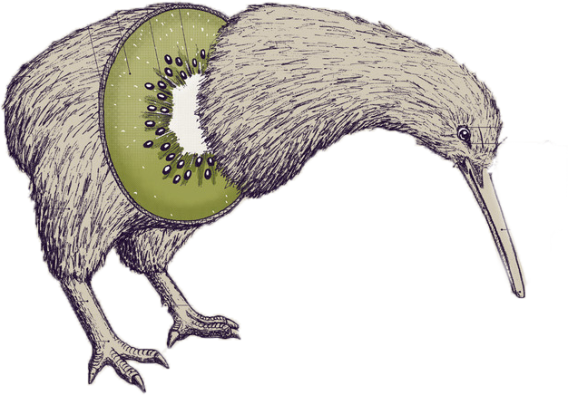

El kiwi apareció como símbolo por primera vez a finales del siglo XIX en las insignias del regimiento de Nueva Zelanda, en 1886, en las del Batallón Sur de Canterbury y en 1887, en las de los Voluntarios de Rifle Hastings. En 1906, cuando el la marca de betún kiwi fue ampliamente vendida en el Reino Unido y en los Estados Unidos, el símbolo se hizo más conocido.7
